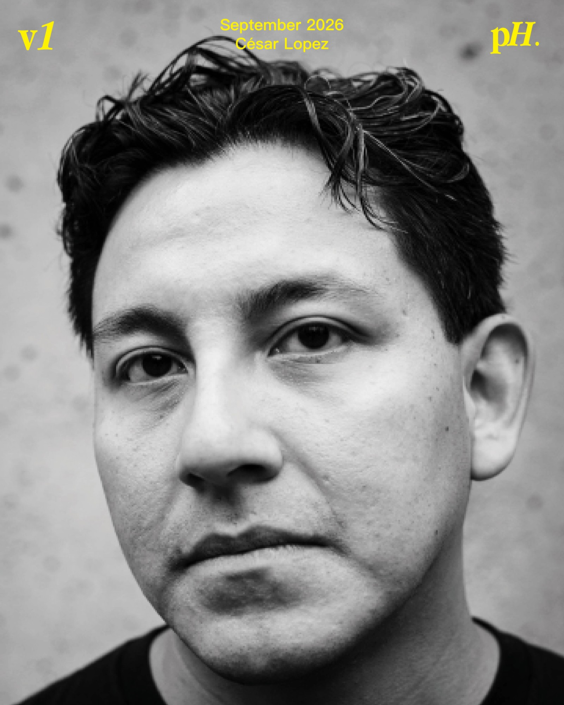
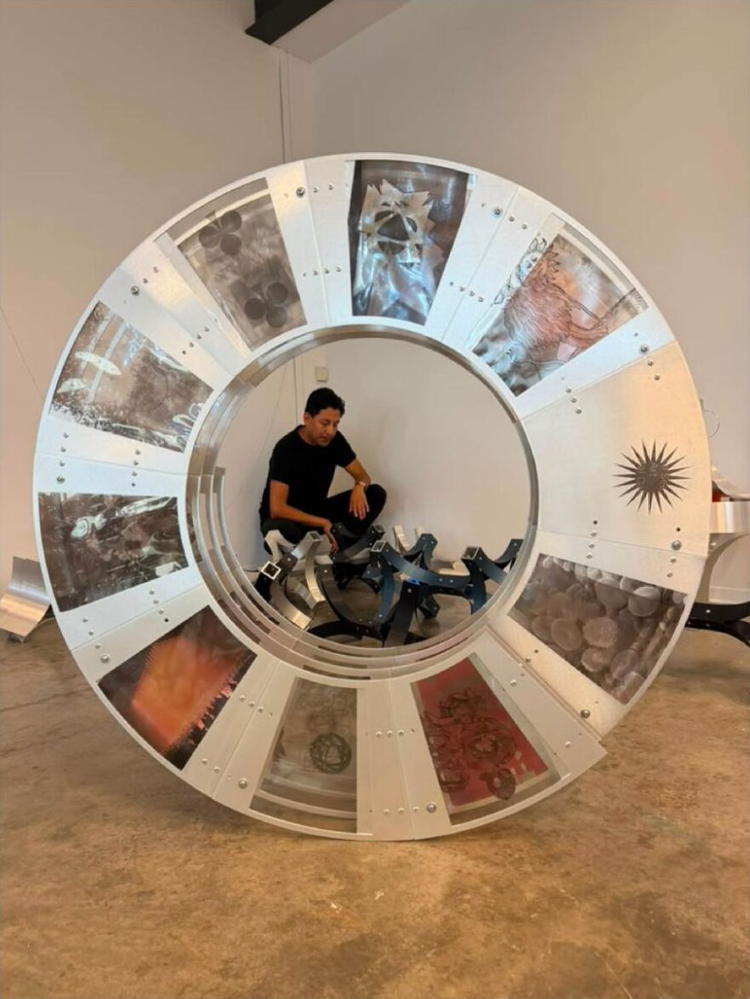
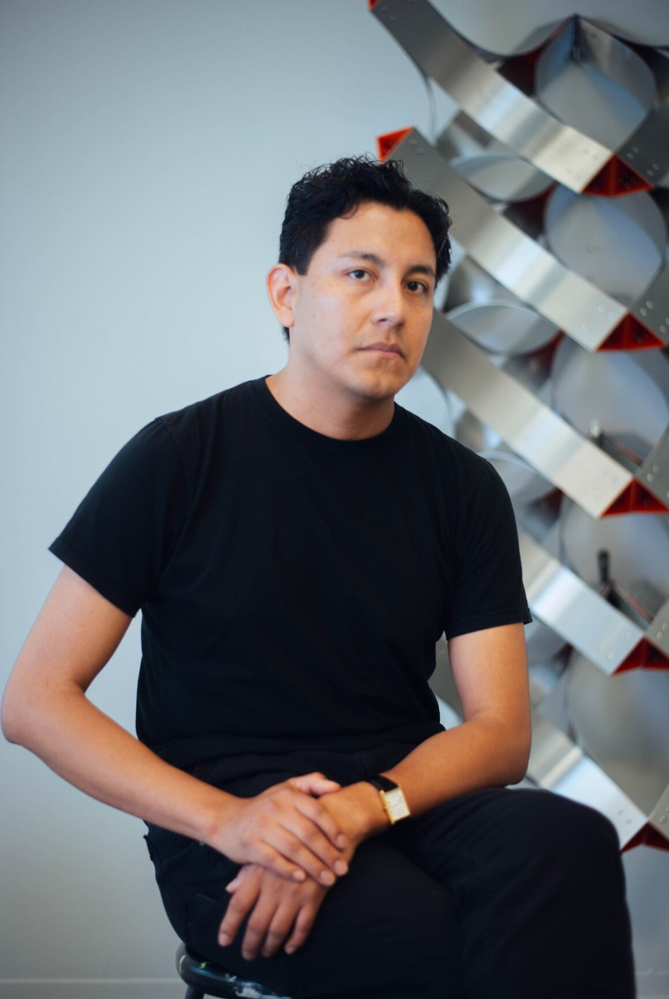
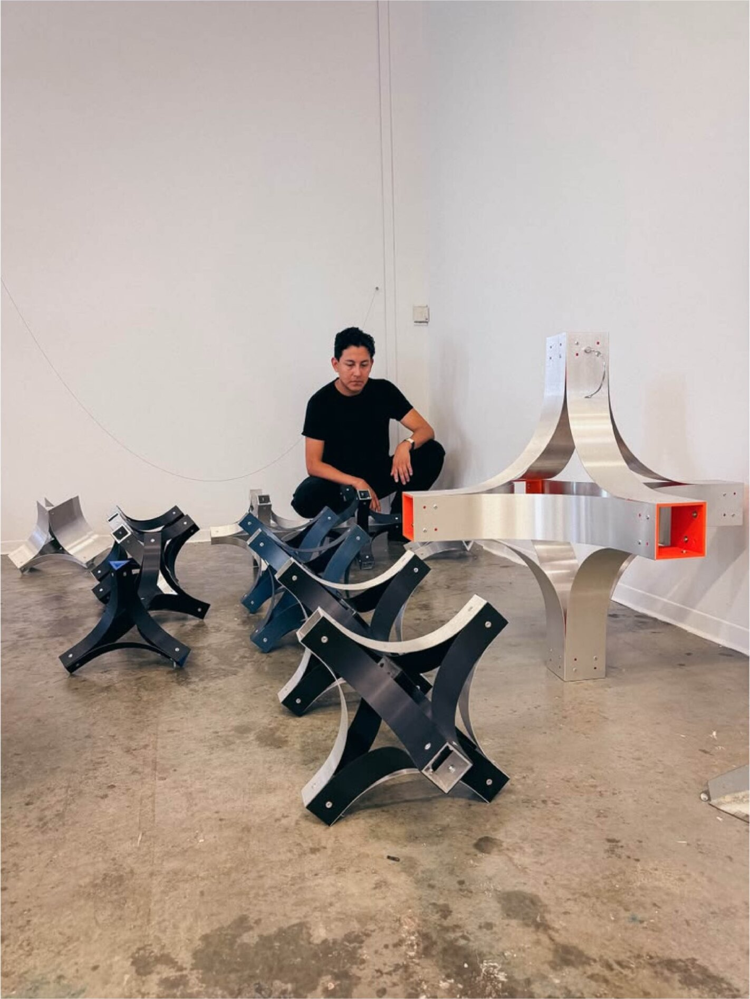
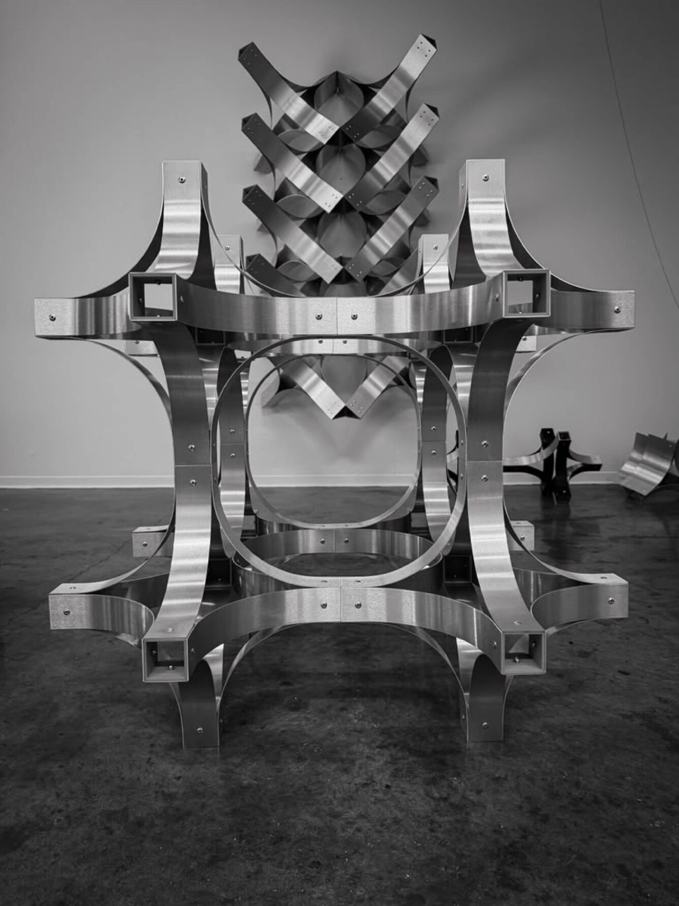
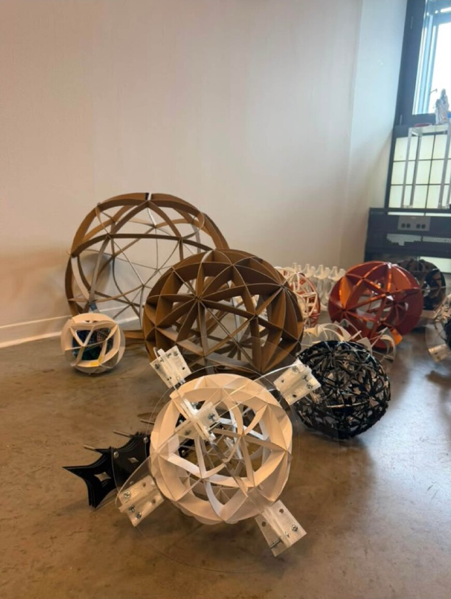
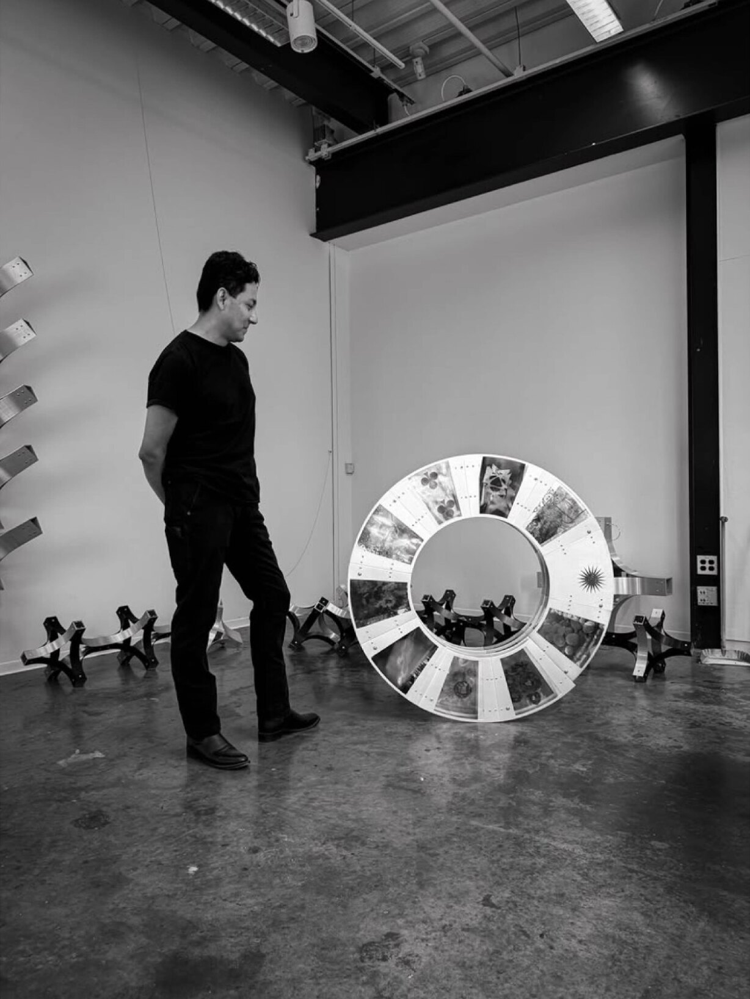

Q: When I met you for the first time, you mentioned you came from Guatemala, and that you got to Yale by way of Kansas City. I’m curious, moving from one country to another, and then from a place like Kansas City to the East Coast, which is almost like a different country in itself, what has that experience been like for you?
Getting older, the job I had was really at the intersection of all of that. I was a translator as a kid, translating English to Spanish, going to the doctor’s office, going to the mall. You end up seeing a full range of the world that way. I think that’s when you realize we’re all doing this. Constantly adapting and changing to our environment.

I ended up in Kansas City after we immigrated to America. Before that I was in a small town just south of the city. You see a lot of young people who’ve immigrated adjusting in real time.
Not only are we the first in our families to go to college, we don’t really know how to go to college. Honestly, I don’t think anybody really does.
Here on the East Coast, I’ve been here a little over a year now. Same energy. You’re constantly connecting with people, with culture. That’s not to say everything is alienating, because it isn’t. But culture, food, music, language. Those have become so important.

Q: You told me before that you had an interest in engineering and the sciences, but that Yale, and art more broadly, wasn’t necessarily where you expected to end up. How has it felt translating those interests into artwork?
I’ve always had a strong interest in learning about a lot of things. I’m a curious person by nature. I used to collect butterflies.
I was interested in biology, and in taking things apart: industrial design, engineering, though as a kid you don’t know that’s what it’s called. You just want to see how something works.

Q: Do you feel like that movement, those experiences, have shaped the work you’re making?
Yeah, quite a bit. I want to be clear it’s not the only thing that informs it, but it would be dishonest to say no. My immigration story touches every part of my life.
I actually just had my biometrics done, my fingerprints. I can’t get a tattoo.
It’s present in every part of my life, so of course it’s present in the work.
Q: Wait — why the tattoo?
When you do your biometrics, they photograph every tattoo and run it through a database to check it’s not gang-affiliated.

Q: The first piece of yours I saw was at the MFA show last fall. I’d describe it as a caltrop, that curved triangle form. Now I’m seeing this circular form emerge. Where did that original curved structure come from? How did you arrive at that shape?
It was a very happy accident. You’re always kind of stumbling into things.
I was actually trying to build a sphere, a globe, to reference a migratory pattern, and at the time I just wasn’t very good at building that kind of form yet.
So what I ended up with was a curve taken from the surface of the globe. It’s like the globe turned inside out.
I took that piece of the curve and started using it as a motif referencing my own migration pattern, coming north to America.
From there, I built a system to develop it into a huge variety of forms. It’s actually a bit like IKEA furniture: you can add pieces, grow it in different directions.
The real development has happened in the system itself, not in any single object.
Q: I’m also curious about the tension between the physical structures, which are very precise, almost calculated in their construction, and the subject matter you’re working with, which is migration, borders, identity, culture. What do you think about the relationship between what we’re seeing and what the work is actually about?
There’s a real connection between something internal and the work. I’m very regimented in my life, and I think that’s connected to how I make things.

When I look inward, I recognize there’s a kind of structure. Not control, exactly, but structure. That’s genuinely good for me as a person, because for so many of us, life has been chaos.
There was so much chaos in my life — not because of my parents, but just from immigrating to a different country.
You’re floating, if anything.
There’s no structure in a very broad, abstract sense. So now I’m very regimented, and I think that’s a direct response to what my life was.
Q: If you could describe César Lopez in one word, what word would it be?
Disciplined.
